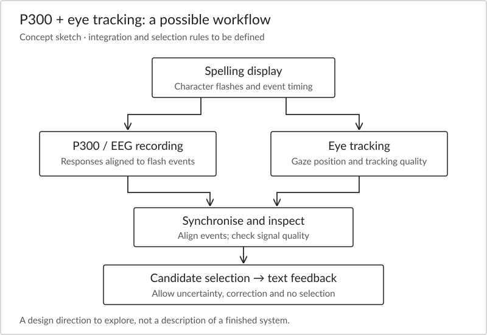
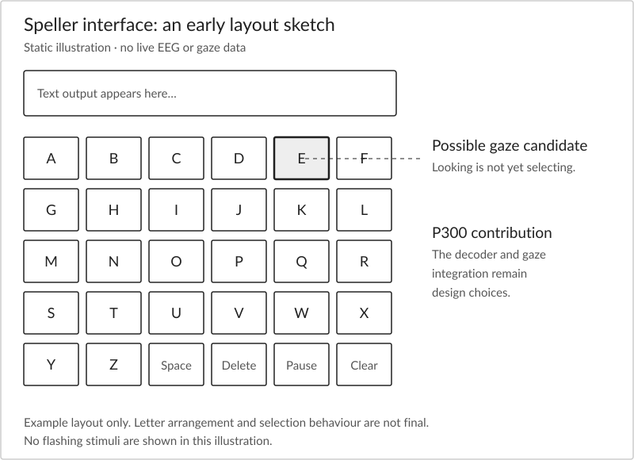

The time course of emotional responses
Our central question is how emotional responses unfold over time, particularly their initiation, maintenance and recovery, and whether disruptions in these processes contribute to psychopathology.
Two individuals might show a similar initial response to an emotional event but differ in how long that response persists. Conversely, a strong response may be brief. Distinguishing these possibilities requires measurements that capture change rather than compress an entire experience into one average.
The research direction links affective neuroscience, cognitive neuroscience and experimental psychopathology. EEG and ERP provide information about neural timing; behavioural tasks, eye tracking and self-report help interpret that information.
Questions guiding the work
Initiation: sensitivity to emotional information
When does emotional information begin to influence processing? How do task goals and stimulus context affect initial attention and reactivity? A key challenge is to distinguish emotional significance from ordinary visual differences or task difficulty.
Maintenance: attentional persistence
Why does attention remain engaged with some information? We are interested in sustained processing, disengagement and the possibility that an emotional response continues even when the immediate task has changed.
Recovery: what happens after an event
How quickly do responses decline after emotional activation, and what helps or interferes with that decline? Recovery is not simply the absence of reactivity. It needs a clearly defined observation period and a suitable baseline or comparison.
Cognitive control: responding to changing demands
How do people maintain goals, manage competing information and shift their attention in emotional contexts? Experimental contrasts can help separate control demands from general changes in motivation or performance.
Depression, anxiety and experimental psychopathology
The aim is to understand processes that may be relevant to psychological difficulties, rather than assign a single neural signature to a diagnostic category. Questions about emotional persistence and recovery may be examined alongside variation in symptoms and individual experience.
Experimental psychopathology uses controlled tasks to investigate possible mechanisms. A task can test a specific prediction, but a laboratory response is only one part of a person’s functioning. Relationships observed in a task need to be interpreted within the sample and the wider context.
A proposed mechanism requires more than a correlation. Longitudinal observations, carefully justified manipulations and replication can help evaluate whether a process precedes, follows or contributes to difficulties. These are methodological directions, not claims of completed projects.
Matching a question to a measurement
| Approach | What it contributes | What needs care |
|---|---|---|
| EEG / ERP | Timing and duration of event-related neural responses. | Artifacts, trial counts, reference and overlapping processes. |
| Eye tracking | Where gaze is directed and how it changes over time. | Calibration, lost tracking and the distinction between gaze and covert attention. |
| Behavioural experiments | Accuracy, response speed, choices and task performance. | Speed–accuracy trade-offs and alternative explanations of a task effect. |
| Self-report | Subjective experience and symptom-related information. | The question asked, reporting interval and measurement properties. |
Agreement across methods can strengthen an interpretation; disagreement can reveal that the methods address different processes. See neural timing and emotional recovery for a more detailed example.
Project under development
P300-based BCI speller with integrated eye tracking
Alongside research on emotional processing, Dr. Hiran Shanake Perera is developing a P300-based brain–computer interface (BCI) speller that integrates EEG and eye tracking. The project brings together neural recording, visual attention and computer-based interaction.
A P300 speller uses event-related EEG responses to support selection of letters or symbols. When a person attends to a target character, flashes involving that target can produce a different response from non-target flashes. A decoder uses evidence across stimulus presentations to estimate the intended selection; it does not read the letter directly from a person’s thoughts. Eye tracking offers a complementary measure of where a person is looking. Bringing the two together opens a practical question: how can gaze information and EEG contribute to a deliberate selection, rather than treating every look at a letter as an intention to type it?

Illustrative, not a project hardware specification.
Exploring the integration
One possible design is to use gaze to narrow the set of candidate letters while EEG contributes evidence to the selection decision. Another is to combine the two streams within a shared decision rule. These are conceptual directions for the project, not confirmed features of the current implementation.
The project uses a P300 approach. The precise flash sequence, hardware, interface layout, decoder and gaze-integration rule are still to be detailed here. Published P300-and-eye-tracking spellers provide relevant background, but their implementation and results should not be attributed to this project.

Interface and interaction
An early interface sketch helps make the design questions concrete: how letters are arranged, how a possible target is indicated and how a user can pause or correct a selection. Gaze location is not a direct measure of intention, and a practical interface needs to accommodate uncertain signals and periods when no selection is intended.

Development questions
- Timing and synchronisation: how should display events, EEG and gaze samples be aligned so that each decision uses the intended information?
- Signal quality: how should the system respond to blinks, lost eye tracking, movement or an uncertain EEG estimate?
- Selection and correction: when should a candidate become a character, and how can an unintended selection be reversed?
- Calibration and usability: how much preparation is needed, and how do visual demands and sustained attention affect use?
What an evaluation could examine
A useful evaluation would consider character-selection accuracy, the time needed to enter text, correction effort, unintended selections, calibration time and user workload. Comparing an integrated system with gaze-only and EEG-only conditions could help establish what each stream contributes. These are proposed evaluation dimensions; no performance results or participant findings are reported at this stage.
This project extends the website’s interest in neural timing and attention into interface development. Its scope and technical details will be updated as development progresses.
Examples from the wider field, not publications from this project: Fusion of P300 and eye-tracker data for spelling using BCI2000.
Projects and outputs
The P300 and eye-tracking BCI speller is currently under development. Technical updates and research outputs will be added when ready for public release. The emotional-processing themes above describe ongoing research interests rather than a list of completed studies.
Confirmed publication details will appear on the Publications page. Enquiries about research ideas or potential collaboration can be sent to Dr. Hiran Shanake Perera.